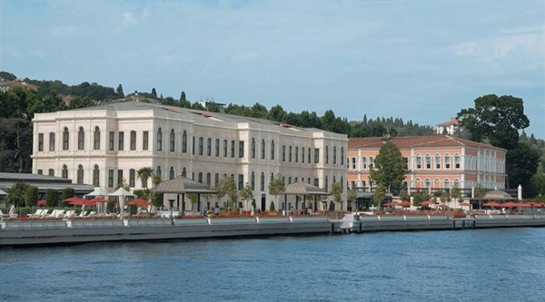
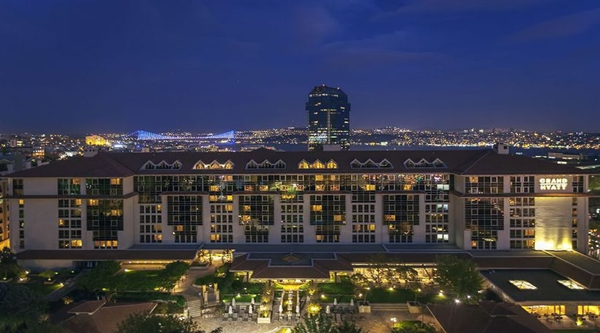
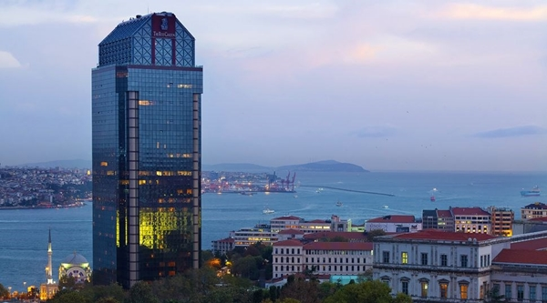
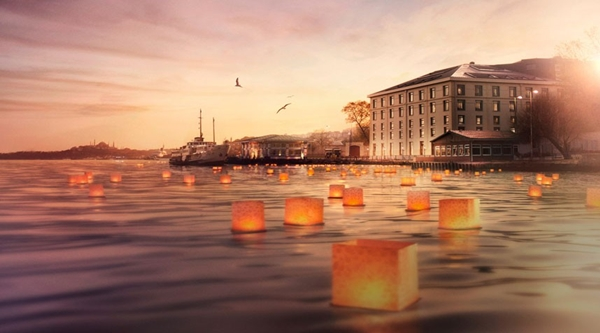
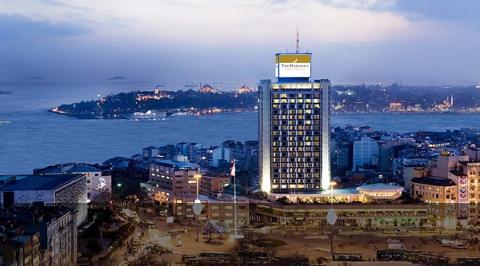
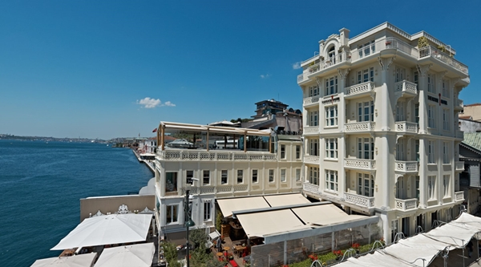
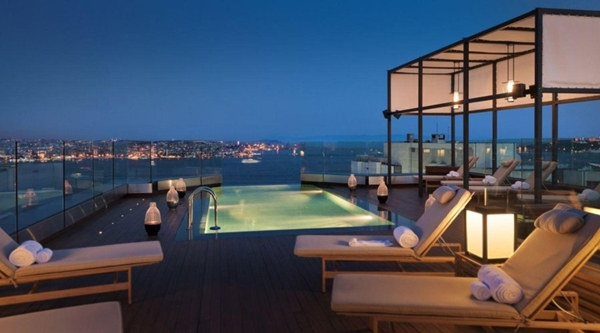
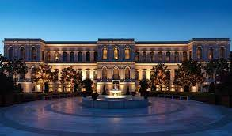
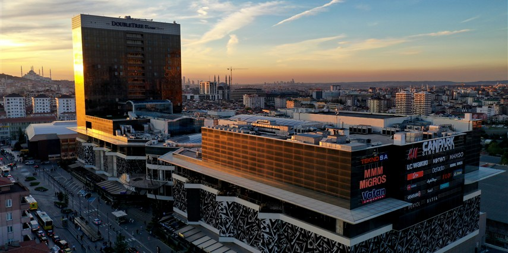

(Hilton/İSTANBUL) |
HİLTON İSTANBUL BOSPHORUSHilton İstanbul Bosphorus Beş yıldızlı bu otel, İstanbul’un Avrupa yakasında Boğaz’a nazır bir konumda hizmet vermektedir. Tesiste kapalı ve açık havuz, yemyeşil bir bahçe, geleneksel bir Türk hamamı ve 7 restoran ve bar seçeneği vardır. Hilton İstanbul Bosphrous’un aydınlık odalarında bahçe ya da Boğaz’a bakan balkonlar vardır. Birimler Türk işi detaylar içeren geleneksel dekora sahiptir. Odaların hepsi geniş pencerelidir ve ayrı bir oturma alanı, ışık geçirmeyen perdeler ve mermer banyolar sağlamaktadır. Executive Odalar, gün boyu atıştırmalıklar ve içecekler servis eden Executive Lounge’a ücretsiz erişimden yararlanabilir.Aşağıda ki linke tıklayarak daha fazla bilgi edinebilirsiniz: |

(Cvk Park/İSTANBUL) |
CVK PARK BOSPHORUSEkim 2013’te inşa edilen ve şehir merkezinin kalbinde yer alan CVK Park Bosphorus Hotel İstanbul, Taksim Meydanı’na sadece 150 metre uzaklıktadır. Şık iç mekanlara sahip olan otelin konukları, 2 yüzme havuzundan ve 8500 m²lik alanda hizmet veren kapsamlı Safira Spa Centre’dan faydalanabilirler. Ayrıca sauna, Türk hamamı, buhar odası ve masaj olanakları mevcuttur. CVK Park Bosphorus Hotel İstanbul’un lüks odalarında LCD TV, ücretsiz WiFi ve ücretsiz çay-kahve yapma imkanı eşliğinde elektrikli su ısıtıcısı bulunmaktadır. Odalardan bazıları spa küvetlidir. Ayrıca bazı odalar deniz, şehir veya bahçe manzarası sunar.Aşağıda ki linke tıklayarak daha fazla bilgi edinebilirsiniz: |

(The Ritz/İSTANBUL) |
THE RİTZ CARLTONŞehir ve İstanbul Boğazı’nın pitoresk manzaralarına sahip The Ritz-Carlton, İstanbul; şehrin kalbinde yer alır. Tesis genelinde ücretsiz hızlı internet erişiminden yararlanabilirsiniz. Bu 5 yıldızlı otelden Sultanahmet, Topkapı Sarayı, Sultanahmet Cami ve Kapalı Çarşı gibi eski kentin ünlü cazibe noktalarına arabayla sadece 15 dakikada ulaşılabilir. The Ritz-Carlton’ın lüks mobilyalarla zarif bir şekilde dekore edilmiş tüm konaklama birimlerinde konforlu koltuklar içeren oturma alanı ve süslü çekmeceler göze çarpar. Tamamen mermerden yapılmış banyoda ayrı yağmur duşu, derin küvet, seçkin Asprey banyo malzemeleri ve yumuşak havlu bornoz ile terlikler mevcuttur. Manzara eşliğinde ücretsiz günlük gazetenizi okurken odanızdaki Nespresso makinesinde hazırlayabileceğiniz kahvenizi yudumlayabilirsiniz. .Aşağıda ki linke tıklayarak daha fazla bilgi edinebilirsiniz: |

(Shangri-La/İSTANBUL) |
SHANGRİ-LA BOSPHORUSShangri-La Bosphorus Boğaz’ın Avrupa kıyısındaki Shangri-La Bosphorus, İstanbul, Dolmabahçe Saray ı ile Deniz Müzesi’nin arasında yer almaktadır. CHI, The Spa tesisinin yanı sıra kapalı bir yüzme havuzuna ev sahipliği yapan otelin odaları, modern olanaklarla zarif bir şekilde dekore edilmiştir. Odalara Asya’ya özgü unsurlara sahip çağdaş bir dekor hakimdir. Odaların her birinde yüksek teknoloji ürünleri, ücretsiz hızlı internet, düz ekran TV ve iPod yuvası yer alır. Mermer banyolarda ısıtmalı zeminler ve Bvlgari marka banyo malzemeleri vardır.Aşağıda ki linke tıklayarak daha fazla bilgi edinebilirsiniz: |

(The Marmara/İSTANBUL) |
THE MARMARA İSTANBULThe Marmara Taksim The Marmara Hotel, İstanbul’un hareketli Taksim Meydanı üzerinde yükselmektedir. Otelin lüks odaları kablo TV ve ücretsiz Wi-Fi erişimiyle donatılmıştır. Odalardan muhteşem Boğaz ve şehir manzaralarını izleyebilirsiniz. Açık havuz terasına sahip otelin spa alanında Türk hamamı vardır. The Marmara Taksim’in halı kaplı zeminlere sahip geniş odalarında gömme dolap ve çalışma masası vardır. En-suite mermer banyolar küvet ve saç kurutma makinesi ile donatılmıştır.Aşağıda ki linke tıklayarak daha fazla bilgi edinebilirsiniz: |
ALTERNATİF FARKLI OTELLER

(The House Hotel Bosphorus) |

(Swissotel The Bosphorus) |

(Four Seasons Hotel) |

(DoubleTree by Hilton İstanbul) |